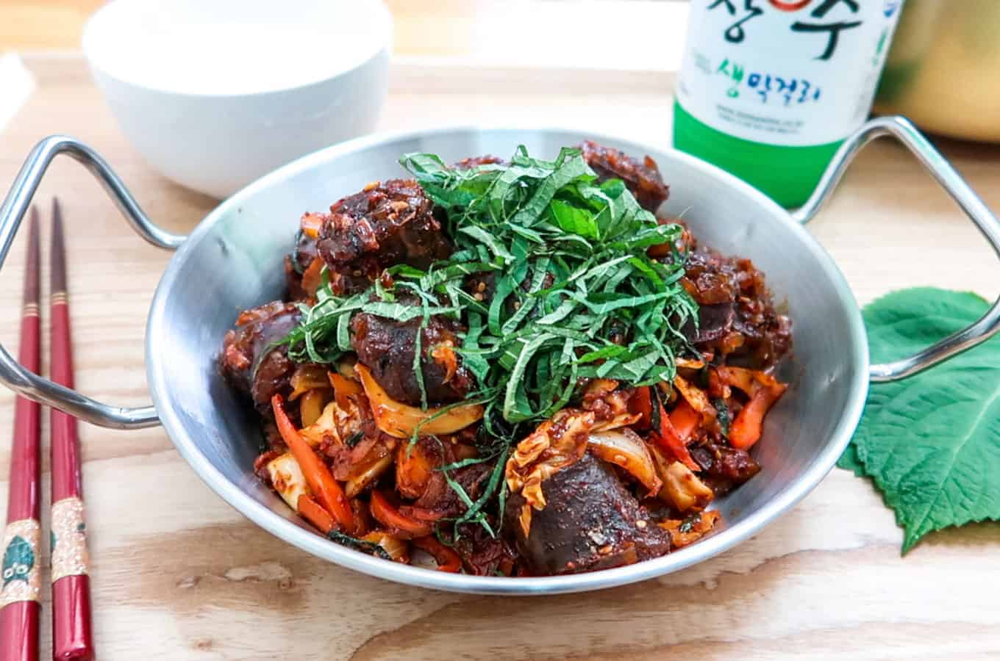

Soondae Bokkeum Recipe

Description
Truly the world's best Soondae Bokkeum. While it takes effort to
cook, you will undoubtedly end up with a product you and the whole
family can enjoy!
Ingredients
Soondae Bokkeum
- 500 grams of Soondae
- 1 whole Onion
- 1/4 head of Green Cabbage
- 1/2 a whole Carrot
- 5 Perilla Leaves (optional)
Spicy Gochujang Marinade
- 2 Tablespoons of Gochugaru
- 1 Tablespoon of Gochujang
- 2 Tablespoons of Soy Sauce
- 1/2 Tablespoon of Sugar
- 1 Tablespoon of Honey
- 1 Tablespoon of Maesil
- 1 Tablespoon of Minced Garlic
- 1 Tablespoon of Sesame Oil
- 1 Tablespoon of Sesame Seeds
- A Few Shakes of Black Pepper
Garnish (optional)
- Few Shakes of Perilla Seeds Powder (optional)
Steps
Prep Soondae
-
Bring a pot of water up to boil. Don't take the Soondae out
the plastic package. Add it directly into the boiling water.
Boil for 5 minutes. Then turn off the heat. Give it another
5 minutes to simply sit in the water and steam.
-
Carefully take the Soondae out of the package. Let it cool
down. Then use a knife and cut into small bite-sized pieces.
Sample one - it's ok to eat by itself and a dab of salt.
Prep Veggies and Make Sauce
-
Julienne your onion and carrot into thin slices. Then roughly
dice the piece of cabbage. Roll-up the perilla leaves, tear
off its stems and julienne into thin pieces.
-
Next, take out a mixing bowl and thoroughly mix: Gochugaru
(2T), Gochujang (1T), Soy Sauce (2T), Sugar (½T), Honey (1T),
Maesil (1T), Minced Garlic (1T), Sesame Oil (1T), Sesame Seeds
(1T), Black Pepper (few shakes).
Make Soondae Bokkeum
-
Place frying pan on a medium-high heat. Once its hot, place in
some oil. Then add in the cabbage, onions, and carrots.
Stir-fry until the cabbage and onions turn soft. It should take
about 4-5 minutes.
-
Once cabbage turns translucent and soft, add in the sundae. Then
add in all of the spicy marinade sauce. And reduce your heat to
a medium-low (!) Then stir-fry everything and get it nicely
coated. After 1-2 minutes, turn off heat. Add on some of the
sliced perilla leaves for color. You can also sprinkle-on some
perilla seeds powder (if you have it). Give it one final stir
and plate.
-
Garnish with the rest of the sliced perilla leaves on top.
Bon Appetit!
Home